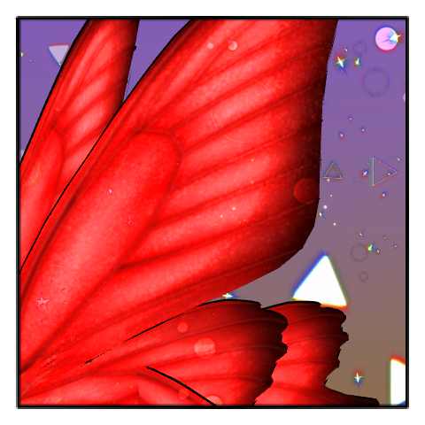
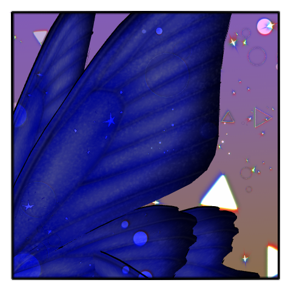
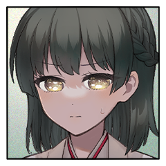
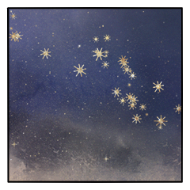
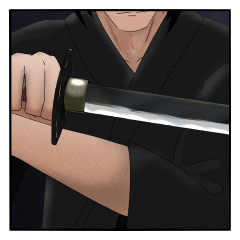
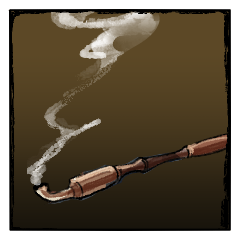
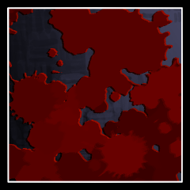

◆第四ラウンド
[ 蘭沢 繭子 ] がダイスシンボルを公開。出目は 2 です。
[ 蘭沢 清誉 ] がダイスシンボルを公開。出目は 2 です。
[ 翡翠 ] がダイスシンボルを公開。出目は 1 です。
[ 牛墓 鞴良 ] がダイスシンボルを公開。出目は 3 です。
[ 黒羽(陰) ] がダイスシンボルを公開。出目は 3 です。
[ 赤羽(火蜥蜴) ] がダイスシンボルを公開。出目は 4 です。
GM
◆ラウンド４
プロット４：赤羽(火蜥蜴) ３：鞴良、黒羽 ２：繭子、清誉 １：翡翠
◆プロット４ 行動：赤羽(火蜥蜴)

赤羽(火蜥蜴)
百燐で攻撃します。
対象は自動的に「黒羽」「繭子」「清誉」「鞴良」
赤羽(火蜥蜴)
2D6>=5 （判定：火術） (2D6>=5) ＞ 8[3,5]
＞ 8 ＞ 成功

黒羽(陰)
2D6>=12 （判定：罠術） (2D6>=12) ＞
12[6,6] ＞ 12 ＞ スペシャル(【生命力】1点か変調一つを回復)
牛墓 鞴良
2D6>=5 （判定：火術） (2D6>=5) ＞
4[2,2] ＞ 4 ＞ 失敗
蘭沢 清誉
2D6>=7 （判定：潜伏術） (2D6>=7) ＞ 8[2,6]
＞ 8 ＞ 成功

蘭沢 繭子
2D6+1>=10 （判定：身体操術） (2D6+1>=10) ＞
9[4,5]+1 ＞ 10 ＞ 成功
[ 牛墓 鞴良 ] 忍術 : 1 → 0

蘭沢 繭子
鈴を振る。風が火の粉を払い、散らす。
牛墓 鞴良
見過ごすように、その火に身体が触れる。
初めてあの日。お前が吹いた火の色と同じ。
牛墓 鞴良
泣け泣け。今はもう。
世界が終わるなら。
牛墓 鞴良
2d6 (2D6) ＞
5[2,3] ＞ 5
黒羽
2d6 (2D6) ＞
4[1,3] ＞ 4
◆プロット３ 行動：黒羽
黒羽
2D6>=5 （判定：飛術） (2D6>=5) ＞
11[5,6] ＞ 11 ＞ 成功
蘭沢 繭子
2D6>=7 （判定：刀術） (2D6>=7) ＞
11[5,6] ＞ 11 ＞ 成功
黒羽
その翅から落ちる鱗粉が細かい星のように鋭いとげをもって。
◆プロット３ 行動：牛墓 鞴良
牛墓 鞴良
大詰を組み合わせて交叉を使用します。
対象は蘭沢 清誉。
牛墓 鞴良
2D6>=5 （判定：刀術） (2D6>=5) ＞
4[1,3] ＞ 4 ＞ 失敗
牛墓 鞴良
しばし、火の粉の散っていく様を眺めるばかり。
蘭沢 繭子
2d6 (2D6) ＞
9[3,6] ＞ 9
蘭沢 清誉
2d6 (2D6) ＞
9[3,6] ＞ 9
蘭沢 繭子
2d6 (2D6) ＞
5[2,3] ＞ 5
蘭沢 清誉
2d6 (2D6) ＞
6[1,5] ＞ 6
◆プロット２ 行動：蘭沢 繭子
[ 蘭沢 繭子 ] 謀術 : 1 → 0
蘭沢 繭子
凶手を組み合わせて接近戦攻撃を翡翠に。
GM
禁術ダメージは後で振ります。先に判定と処理を。
蘭沢 繭子
2D6>=5 （判定：刀術） (2D6>=5) ＞ 8[3,5]
＞ 8 ＞ 成功
GM
成功ですね。そのまま接近戦攻撃を。
鬼影で-2、感情修正で-1。
蘭沢 繭子
2D6-3>=5 （判定：千里眼の術） (2D6-3>=5) ＞
3[1,2]-3 ＞ 0 ＞ 失敗
[ 蘭沢 繭子 ] 忍具 : 2 → 1
蘭沢 繭子
2D6-3>=5 （判定：千里眼の術） (2D6-3>=5) ＞
7[3,4]-3 ＞ 4 ＞ 失敗
[ 蘭沢 繭子 ] 体術 : 1 → 0
GM
演出は……ここは同プロットでまとめた方がいいか。
◆プロット３ 行動：蘭沢 清誉
蘭沢 清誉
《畜仆し》
指定特技 ：言霊術
エフェクト：クリティカルヒット／くらまし／射程低下
翡翠
2D6+2+1-2>=5 （判定：言霊術） (2D6+2+1-2>=5) ＞
7[3,4]+2+1-2 ＞ 8 ＞ 成功
蘭沢 繭子
火の粉の、鱗粉の、光を美しさを踏み越えて
蘭沢 繭子
ひらりひらり舞う蝶を捉えようというように。
蘭沢 繭子
触れないように、かつてそう告げた言葉を返されたかのごとく。

蘭沢 清誉
妻の息が上がるのを横に聞きながら、獣に肉薄し化粧応神を振るう。
翡翠
憎しみは届かない。
哀れみも届かない。
ここには。
蘭沢 清誉
他ならぬお前自身がそれを求めてはいないのに。
◆プロット１ 行動：翡翠
翡翠
2D6>=5 （判定：生存術） (2D6>=5) ＞ 8[4,4]
＞ 8 ＞ 成功
蘭沢 清誉
2D6-1>=5 （判定：潜伏術） (2D6-1>=5) ＞
9[3,6]-1 ＞ 8 ＞ 成功
翡翠
構えた刃の切っ先がまっすぐに突きを繰り出す。
蘭沢 清誉
僅かに身を下げ、横にした刀でその切っ先を押し上げるようにして突きをずらす。
第五ラウンド
[ 翡翠 ] がダイスシンボルを公開。出目は 5 です。
[ 蘭沢 清誉 ] がダイスシンボルを公開。出目は 2 です。
[ 蘭沢 繭子 ] がダイスシンボルを公開。出目は 1 です。
[ 黒羽 ] がダイスシンボルを公開。出目は 6 です。
[ 牛墓 鞴良 ] がダイスシンボルを公開。出目は 3 です。
[ 赤羽(火蜥蜴) ] がダイスシンボルを公開。出目は 2 です。
GM
◆ラウンド５
プロット６：黒羽 ５：翡翠 ３：鞴良 ２：清誉、赤羽(火蜥蜴 １：繭子
◆プロット６ 行動：黒羽
黒羽
『禁術』『夜雀』
『凶手』→『接近戦攻撃』に変更
GM
了解です。以降接近戦攻撃が使われるたび、使用者は接近戦ダメージを１点受けます。
黒羽
大きな黒い蝶の高く舞い、吸い込めば呼吸を満たす輝きが降り注ぐ。
◆プロット５ 行動：翡翠
翡翠
陽炎のように揺らめく景色の中、影に紛れてあちらこちら。
翡翠
その刃は何者もとらえることはなく、新たなる異界の開く時を待っている。
◆プロット３ 行動：牛墓 鞴良
牛墓 鞴良
大詰と組み合わせて交叉を使用。
対象は蘭沢 清誉。
牛墓 鞴良
2D6>=5 （判定：刀術） (2D6>=5) ＞
12[6,6] ＞ 12 ＞ スペシャル(【生命力】1点か変調一つを回復)
[ 牛墓 鞴良 ] 忍術 : 0 → 1
GM
はい。では呪術から回避判定を。感情修正で+1ですね。
[ 蘭沢 清誉 ] 忍具 : 1 → 0
[ 蘭沢 清誉 ] 戦術 : 0 → 1
蘭沢 清誉
2D6+1>=8 （判定：伝達術） (2D6+1>=8) ＞
5[1,4]+1 ＞ 6 ＞ 失敗
翡翠
2D6+1+2-2>=8 （判定：言霊術） (2D6+1+2-2>=8)
＞ 5[1,4]+1+2-2 ＞ 6 ＞ 失敗
GM
ファンブル。逆凪ですね。あまり影響はないか。
牛墓 鞴良
2D6-2>=5 （判定：憑依術） (2D6-2>=5) ＞
6[2,4]-2 ＞ 4 ＞ 失敗
黒羽
2D6-2>=7 （判定：伝達術） (2D6-2>=7) ＞
9[4,5]-2 ＞ 7 ＞ 成功
GM
清誉に２の接近戦ダメージと１の射撃戦ダメージ。
牛墓 鞴良
2d6 (2D6) ＞
11[5,6] ＞ 11
[ 蘭沢 清誉 ] 忍術 : 1 → 0
[ 蘭沢 清誉 ] 戦術 : 1 → 0
[ 蘭沢 清誉 ] 妖術 : 1 → 0

牛墓 鞴良
煙管の切っ先がゆるり、と満月を描く。
蘭沢 清誉
真ではなくても、言葉にしなければならない。
牛墓 鞴良
「有体な問答では我らの乱世は終わらぬのだ」
牛墓 鞴良
霞のように消える摺り足が、距離を詰める。
蘭沢 清誉
隠し刃の切っ先を弾くべく刀を振るうが、しかし。
牛墓 鞴良
繭糸の張るような緊迫。
どちらかが押せば、或いは引けば血に塗れる死合い。
牛墓 鞴良
「御前たちも理想郷で成るがいい、亡霊に」
蘭沢 清誉
切っ先を受ける刀を握る手を、緩ませはしなかった。
蘭沢 清誉
激情は未だあの夜と同じく、胸を焼いている。
蘭沢 清誉
押し通る。その意思が、しかし眼前に迫る業火に呼応するように力を狂わせる。

蘭沢 清誉
悍ましく蠢く蟲たちが、月明かりの中に無数に散る。
恨めし気に蠕動し、また這い、闇の中へと消えていく。
蘭沢 清誉
2d6 (2D6) ＞
11[5,6] ＞ 11
赤羽(火蜥蜴)
2d6 (2D6) ＞
8[2,6] ＞ 8
◆プロット２ 行動：赤羽
赤羽(火蜥蜴)
2D6>=5 （判定：火術） (2D6>=5) ＞ 8[4,4]
＞ 8 ＞ 成功
牛墓 鞴良
2D6>=5 （判定：火術） (2D6>=5) ＞ 6[3,3]
＞ 6 ＞ 成功
蘭沢 繭子
兵糧丸で体術を回復。感情修正をください。
[ 蘭沢 繭子 ] 忍具 : 1 → 0
[ 蘭沢 繭子 ] 体術 : 0 → 1
GM
自らの秘密を提示し、回想シーン演出を行ってください。
蘭沢 繭子
世界の終わりもこのように美しいだろうか。
蘭沢 繭子
──あなたの作る世界はきっと美しくて、優しいのでしょうね。
蘭沢 繭子
それでも、この世界の滅びを受け入れるわけにはいかない。
蘭沢 繭子
美しくなくて、優しくなくて、正しくない世界に
蘭沢 繭子
この子は、生まれたがっているのだもの。
蘭沢 繭子
【秘密：蘭沢 蘭子】
あの満月の元で、あなたは確かに蘭沢
清誉と愛し合い、殉じる覚悟だった。
しかし、翡翠に攫われてからの時間が、あなたの心に今まで感じたことのない穏やかさを与えてくれてもいる。
あなたは翡翠、蘭沢
清誉に「愛情」の【感情】を抱いている。
だがその感情と記憶は時と共に抜け落ちていく。
自分のシーンを行う前に、感情を持っている対象を1人選択すること。
選択した対象に対する【感情】は即座に失われ、対象に対する記憶も色あせる。
あなたは蘭沢
清誉の子を宿している。
GM
回想シーンの効果により行為判定に+3。感情修正によりさらに+1がつきます。
判定をどうぞ。
蘭沢 繭子
2D6+4>=10 （判定：身体操術） (2D6+4>=10) ＞
7[2,5]+4 ＞ 11 ＞ 成功
GM
いいでしょう。同じく秘密を提示し、回想シーン演出を行ってください。
蘭沢 清誉
眼前の美しい獣を前にして。
斬れ、と。殺せと。
内に蠢く忌まわしい蟲どもが騒ぐ。
蘭沢 清誉
かつて身を投げたという女の熱を宿したまま。
戦場の火を受けてさらに輝きを増している。
蘭沢 清誉
愛し合う相手を殺すことでしか得られなかった力を手に、今。
終焉が近づいている。
蘭沢 清誉
焦がれる頬に、まだやわらかい熱が残っている。
蘭沢 清誉
同じではなかった。道具ではなかった。
あの女こそが俺の愛する妻なのだと、ようやくわかったのに！
蘭沢 清誉
・秘密：
あなたは一族に伝わる神刀『化粧応神』の伝承者である。
あなたの一族の【使命】は終末の獣を殺すことだ。
愛し合う相手を『化粧応神』にて殺すことで、
この刀は真の力を発揮し、獣を殺すことが出来るようになる。
あなたはその役目から逃げるように、ずっとPC②を愛さないようにしてきた。
しかし、あの満月の晩、あなたは彼女を愛してしまった。
メインフェイズ開始前に、以下に示す2つの選択肢の中から、
いずれかを選ぶこと。
蘭沢 清誉
■PC③-1
※秘匿 概要：PC③選択肢1
PC③が歩む道。
・秘密：
刀の声と己の使命に応え、あなたはPC②を殺害した。
あなたに残ったのはPC②への【愛情】と神器『化粧応神』であった。
PC②への愛情を獲得し、プライズ『化粧応神』と『化粧応神』の秘密を手に入れること。
蘭沢 清誉
■PC③-2 ※秘匿 概要：PC③選択肢2
PC③が歩む道。
・秘密：
刀の声に抗うため、あなたは『化粧応神』を折った。
プライズ『化粧応神』はこのセッションから取り除かれる。
GM
回想シーン演出により清誉の行為判定に+3の修正。判定をどうぞ。
蘭沢 清誉
2D6+3>=10 （判定：歩法） (2D6+3>=10) ＞
5[1,4]+3 ＞ 8 ＞ 失敗
GM
体術分野に１点を受けて、清誉の脱落が確定します。
◆プロット２ 行動：蘭沢 清誉
蘭沢 清誉
2D6>=5 （判定：骨法術） (2D6>=5) ＞
4[1,3] ＞ 4 ＞ 失敗
赤羽
火の粉は誰を区別することもなく、平等に降り注ぐ。
蘭沢 清誉
嘆きの一翅が散らす火が喉を、肺を、腕を焼く。
蘭沢 清誉
お前の嘆きにすら、一太刀も浴びせられずに斃れるのか。
蘭沢 清誉
焼けた腕で刀を振るい、赤き翅を斬りつける。
蘭沢 清誉
その刃は、翅さえ捉えることができない。
蘭沢 清誉
抱きとめられてなお、翡翠から目を離さない。
蘭沢 繭子
傷だらけの細い腕が、清誉の身体に回されている。
蘭沢 清誉
立とうとする。まだ刀を向けようとする。
翡翠
終焉を導く獣の翅に傷はなく。
その手には『化生鏖刃』。
蘭沢 繭子
震える腕に力がこもり、白い指先が清誉の着物を掴む。
蘭沢 繭子
「振りほどいて、行かれたらよろしいのです……」
蘭沢 繭子
そう言って、だけどそうはさせまいと縋る。
翡翠
刃を逆手に。離れた右手で異形蠢く頬に触れる。
蘭沢 清誉
振りほどけと言われて、その通りにしようとして。
腕はもう動かなかった。
蘭沢 清誉
鈴を転がす小さな声に嗚咽が混じることに気づいて、思わず。
獣を前にしてーー視線が妻へと一瞬、逸れる。
蘭沢 繭子
涙に濡れた瞳が、清誉に向けられている。
翡翠
早く斬り殺せと。震える刀を左手で強く握りしめ。
蘭沢 清誉
今振りほどけば。決死の力を、最期の一太刀を向けることができれば。
蘭沢 清誉
掛けるべき言葉など何一つ持ってはいないはずなのに、呼んだ。
蘭沢 清誉
これからを。生きて。生きなければならないと思ってしまった。
蘭沢 清誉
世界が終わるというのに、馬鹿げたことを願ってしまった。
蘭沢 繭子
願いを同じくしていることを伝えるように、より一層、すがる腕に力がこもった。
蘭沢 清誉
脳が揺さぶられる。辛うじて繋いでいた意識は、妻の腕の中で途切れた。
◆プロット１ 行動：蘭沢 繭子
蘭沢 繭子
糸の切れたように、夫の長身が繭子にもたれかかる。
蘭沢 繭子
傷口から零れた蟲が肌の上を這いずり回って、だけど少しもおそろしくなどなかった。
蘭沢 繭子
あなたの心がわからないことに比べたら。
蘭沢 繭子
ねぎらうように、いつもならば繭子の手の届かぬ高さにある頭を撫でる。
蘭沢 繭子
「どうか、繭子に任せてくださいまし……」
蘭沢 清誉
応えはない、ただ、わずかばかり安らかに。
蘭沢 清誉
妻の前ですら、眠ることをそうしない男だった。
蘭沢 清誉
それがいま、ほんのすこしだけ。その膝に身体を預けて。